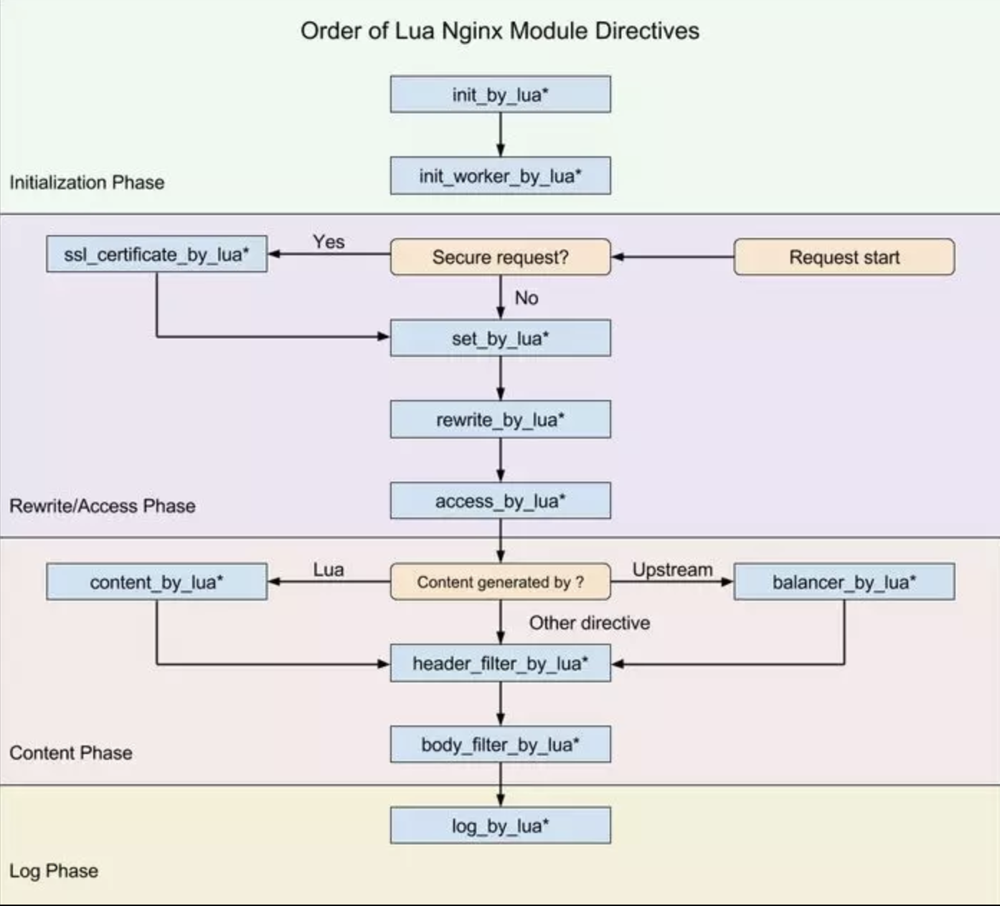

openresty
通过lua扩展nginx实现的web平台，把 LuaJIT VM 嵌入到了 Nginx 中，使得可以直接通过 Lua 脚本在 Nginx 上进行编程，同时还提供了大量的类库（如：lua-resty-mysql lua-resty-redis 等）。
每个worker中有一个Lua VM，当请求被分配到worker时，创建一个coroutine(协程)处理请求。
下载安装
| brew tap openresty/brew
brew install openresty
|
helloopenresty
- 创建站点目录：
mkdir website
- 创建配置目录和日志目录：
mkdir logs conf
- 创建nginx配置文件：
nginx配置文件
1
2
3
4
5
6
7
8
9
10
11
12
13
14
15
16
17
18
19
20
21
22
23
24
25
26
27
28
29 | # main全局块，包含运行nginx服务器的用户组，nginx进程pid存放路径，日志存放路径，配置文件
# 引入，允许生成worker process数等。
worker_processes 1;
error_log logs/error.log;
# events块，用户的网络连接相关，包含每个worker进程的最大连接数，选取哪种事件驱动模型处理
# 连接请求，是否允许同时接受多个网路连接，开启多个网络连接序列化等。
events {
worker_connections 1024;
}
# http块
http {
# http全局块
# server块
server {
# server全局块
listen 8080;
# location块
location / {
default_type text/html;
content_by_lua_block {
ngx.say("<p>hello, world</p>")
}
}
}
}
|
- 导入nginx环境变量：
导入nginx环境变量
| PATH=/usr/local/Cellar/openresty/1.15.8.1/nginx/sbin:$PATH
export PATH
|
- 进入website目录并启动nginx服务器：
nginx -p . -c conf/nginx.conf
- 访问helloopenresty:
curl http://localhost:8080
请求处理流程

以下行为嵌入到nginx不同的处理阶段。
| 指令 |
使用范围 |
解释 |
| init_by_lua/init_worker_by_lua |
http |
初始化全局配置/预加载Lua模块 |
| ssl_certificate_by_lua |
|
|
| set_by_lua |
server, location |
设置nginx变量 |
| rewrite_by_lua |
http, server, location |
转发/重定向 |
| access_by_lua |
http, server, location |
访问控制 |
| content_by_lua/balancer_by_lua |
location |
接收请求处理并输出响应 |
| header_filter_by_lua |
http, server, location |
设置header和cookie |
| body_filter_by_lua |
http, server, location |
对响应数据过滤（截断，替换） |
| log_by_lua |
http, server, location |
记录访问量，统计平均响应时间 |
两种嵌入方式
业务场景
使用Redis实现动态配置upstream
- 创建服务器变量
| server {
listen 80;
server_name app1.example.com;
location / {
...
set $backend_server '';
}
}
|
- 在Redis中存入服务器地址：
set app1 10.10.10.10:8080
- 创建内部接口使用ngx_redis2模块读取Redis数据
| # GET /get?key=some_key
location = /get {
internal; # 保护这个接口只运行内部调用
set_unescape_uri $key $arg_key; # this requires ngx_set_misc
redis2_query get $key;
redis2_pass foo.com:6379; # redis_server and port
}
|
- 在请求访问阶段调用内部接口查询服务器地址并赋值给变量
1
2
3
4
5
6
7
8
9
10
11
12
13
14
15
16
17 | location / {
...
access_by_lua_block {
local rds_key = "app1"
# 从 redis 中获取 key 为 app1 对应的 server_ip
local res = ngx.location.capture('/get', { args = {key = rds_key}})
# 解析 redis 结果
local parser = require("redis.parser")
local server, typ = parser.parse_reply(res.body)
if typ ~= parser.BULK_REPLY or not server then
ngx.log(ngx.ERR, "bad redis response: ", res.body)
ngx.exit(500)
end
ngx.var.backend_server = server
}
}
|
- 在nginx转发阶段将请求转发至后端服务
| location / {
...
access_by_lua_block {...};
proxy_pass http://$backend_server;
}
|